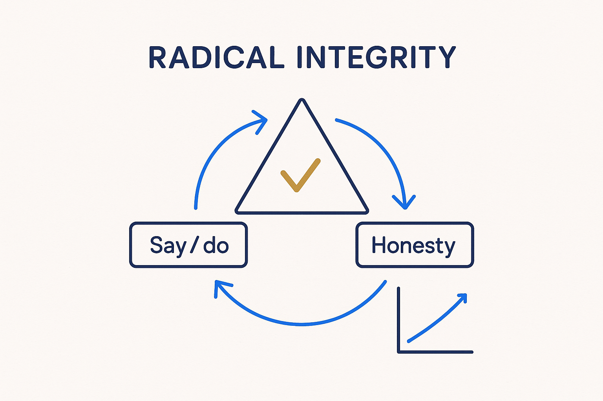

Integrity is the basis of success — with others and with yourself. Say what you'll do, do what you said, and be honest about what's working and what isn't.

> Integrity is the basis of success — with others and with yourself. Say what you'll do, do what you said, and be honest about what's working and what isn't.
Integrity is the foundation the whole attitude rests on. It has two faces, and both matter. Integrity with others: say what you’ll do, do what you said, and don’t hide the parts that aren’t working. Integrity with yourself: be honest about your own output, your own assumptions, your own pace — especially when no one is checking. The second is harder than the first, and it is the one that makes the first believable.
It is also structural, not just moral. A model, a decision record, a set of minutes — these are only worth anything if they are honest. Structure without integrity is just paperwork: a clean diagram of something that isn’t true, a decision log that records the story people wanted rather than the one that happened. The discipline of writing things down is what makes integrity checkable — you can hold a versioned record to account in a way you can never hold a memory.
Say what you’ll do, do what you said, and be honest about the gap when there is one. That is what earns the trust every breakthrough depends on.
Where it lives: the attitude layer of Breakthrough Modeling — the base everything else stands on.